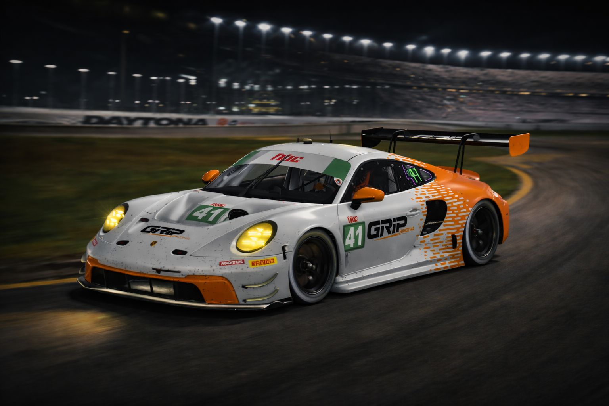

EST. 2008
A Lenda do Automobilismo Virtual Brasileiro
18 Anos de Paixão, Velocidade e Conquistas
18 Anos de Paixão, Velocidade e Conquistas

Desde 2008, a Grip Racing é sinônimo de excelência no automobilismo virtual brasileiro.
Ao longo de 18 anos de história, construímos um legado impressionante com 303 pilotos diferentes que representaram a equipe, acumulando 9.137 participações em 556 campeonatos e 3.065 etapas. Conquistamos 168 títulos (99 de pilotos e 69 de construtores), com 1.718 pódios, sendo 576 vitórias.
Nossa presença se estende por 29 ligas distintas, com destaque para F1BC (6.962 participações e 108 títulos), Racing Bears (627 participações e 0 títulos), RacersAv (0 participações e 0 títulos), eventos oficiais do iRacing (0 participações), entre outras. A consistência é nossa marca: 4.868 finalizações no Top 10, 2.723 no Top 5, além de 491 pole positions e 505 voltas mais rápidas. Mais que números, somos uma família unida pela paixão, respeito e fair play.
iRacing • Automobilista • Automobilista 2
rFactor • rFactor 2 • Assetto Corsa
Assetto Corsa Competizione • Le Mans Ultimate
99 Pilotos • 69 Construtores
576 Vitórias • 1.718 Pódios
18 Anos de História • 29 Ligas
Fair Play • Respeito • Paixão
18 anos construindo legado no automobilismo virtual
Nascimento da Grip Racing com 29 participações iniciais, unindo pilotos apaixonados por simuladores de corrida no Brasil.
2012 marca nossa primeira conquista com 426 participações. Em 2013, saltamos para 861 participações e 4 títulos, consolidando presença nacional.
2016 brilha com 9 títulos e 53 poles. 2019 alcança 10 títulos e 176 pódios, estabelecendo a Grip como potência do automobilismo virtual.
2020: 13 títulos duplos (pilotos e construtores). 2021: recorde de 1.075 participações e 16 títulos. 2022: histórico de 17 títulos com 85 vitórias.
Mantendo excelência com 13 títulos em 2023. Início de 2025 já mostra força com 10 vitórias em 37 participações. Rumo a novos recordes!
Os talentos que representam a Grip Racing
Desde 2008, mais de 300 pilotos vestiram as cores da Grip Racing. Cada um contribuiu para construir nosso legado de excelência no automobilismo virtual brasileiro. Da estreia às conquistas, todos fazem parte da nossa história.
Os pilotos que lideram a equipe atualmente
Siga-nos nas redes sociais e fique por dentro de tudo!
Entre em contato conosco através das redes sociais!